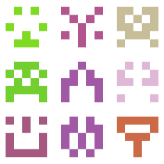
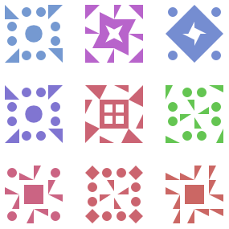
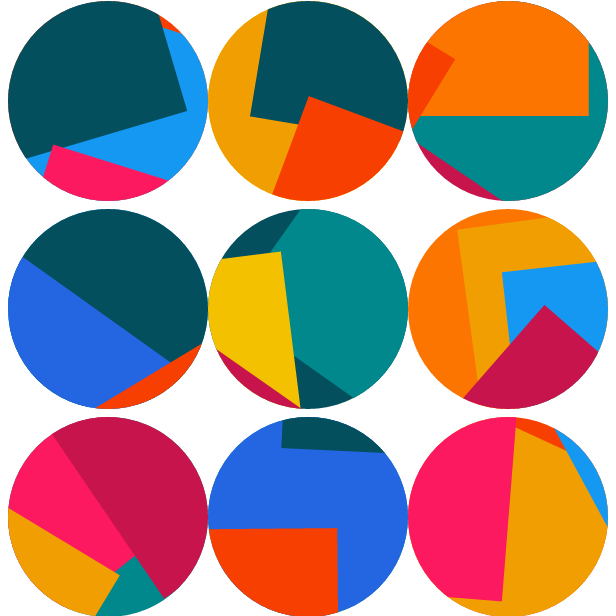
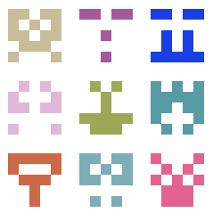
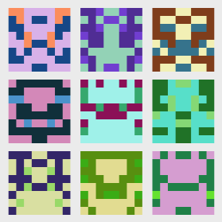

Identicons
Data visualization of the future
What are Identicons?
Identicons are visual representations of hash values. These hash values can be used to represent IP adresses, user IDs, and other sets of data. These images allow for visual distinction between multiple units of information.
What is a Hash value?
A hash value is a numeric value of a fixed length that uniquely identifies data. Hash values represent large amounts of data as much smaller numeric values. Identicon creating programs use these smaller values to determine the value for each section of an identicon
Identicon Examples:
-

5x5 Identicons
Being only 5 pixels wide and tall, 5x5 identicons are the simplest it can get.
-

Jdenticons
Jdenticons are open source identicons that utilize JavaScript to create hashes.
-

Jazzicons
Jazzicons are a type of identicon that aim to replace boring, blocky, and overused identicons.
5x5 Identicons
5x5 identicons are about as simple as it gets. The identicon program creates a hash value for a given string of characters. Each character in the hash value determines whether the current pixel will be enabled or disabled, being blank if disabled. The color of the identicon is determined through a hash-determined color value using the entire hash code.
More About Identicons
-

Github Identicons
Github now uses a 5x5 identicon as a base profile picture using a hash of the users ID.
-

EthAvatar
Using EthAvatar Ethereum users can now create an identicon for their crypto addresses.
-
DiceBear
Use DiceBear to generate even more identicons including humans, robots, and QR codes!